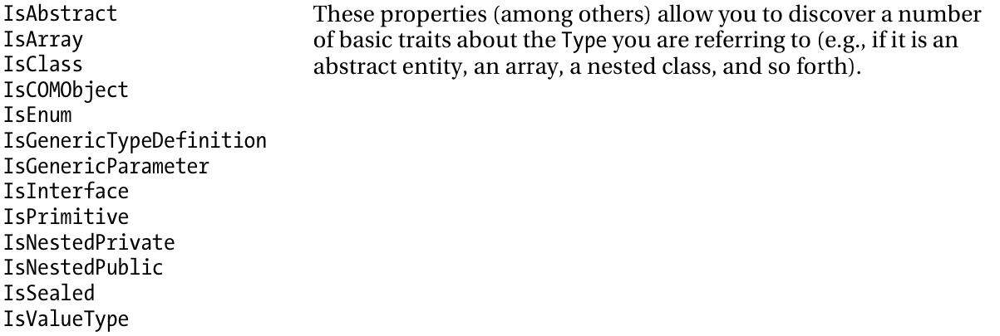
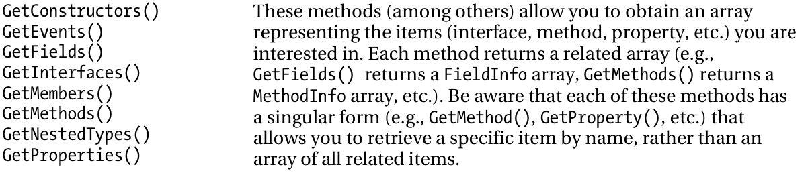

C# course
Lecture 14
Reflection
Reflection overview
All types in the CLR are self-describing
- CLR provides a reader and writer for type definitions (System.Reflection & System.Reflection.emit)
- You can ‘read’ programs
- You can map between type systems
- You can interrogate objects and types inside a running program
Definitions.
- Reflection is the process of runtime type discovery.
- Reflection is a generic term that describes the ability to inspect and manipulate program elements at runtime
What is "Reflection"?
- Reflection provides objects that encapsulate assemblies, modules, and types. (MSDN)
- You can use reflection to dynamically create an instance of a type... (MSDN)
- You can then invoke the type's methods or access its fields and properties. (MSDN)
- Reflection.Emit namespace contains classes that allow a compiler or tool to emit metadata and Microsoft intermediate language (MSIL) (MSDN)
System.Reflection Namespace

The System.Type class
The System.Type class defines a number of members that can be used to examine a type’s metadata, a great number of which return types from the System.Reflection namespace.
- Type.GetMethods() returns an array of MethodInfo types, Type.GetFields() returns an array of FieldInfo types.
Members of System.Type



Demo
Dynamically Loading Assemblies
The act of loading external assemblies on demand is known as a dynamic load.
System.Reflection defines a class Assembly. Which enables to dynamically load an assembly and discover properties about the assembly
Assembly type enables to dynamically load private or shared assemblies, as well as load an assembly located at an arbitrary location.
1: 2: 3: 4: |
public class Assembly {
public static Assembly Load(AssemblyName assemblyRef);
public static Assembly Load(String assemblyString);
}
|
The CLR forbids any code in the assembly from executing while using ReflectionOnlyLoadFrom or ReflectionOnlyLoad. (Suitable for types investigation).
1: 2: 3: 4: |
public class Assembly {
public static Assembly ReflectionOnlyLoadFrom(String assemblyFile);
public static Assembly ReflectionOnlyLoad(String assemblyString);
}
|
Reflection Performance
... reflection is slow.
If you’re writing an application that will dynamically discover and construct type instances, you should take one of the following approaches:
Have the types derive from a base type that is known at compile time. At run time, construct an instance of the derived type, place the reference in a variable that is of the base type (by way of a cast), and call virtual methods defined by the base type.
Have the type implement an interface that is known at compile time. At run time, construct an instance of the type, place the reference in a variable that is of the interface type (by way of a cast), and call the methods defined by the interface.
Late Binding
Late binding is a technique in which you are able to create an instance of a given type and invoke its members at runtime without having hard-coded compile-time knowledge of its existence.
The System.Activator Class
The System.Activator class (defined in mscorlib.dll) is the key to the .NET late-binding process.
Simple Activator Demo
Activator with generics Demo
.NET Attributes
.NET attributes are class types that extend the abstract System.Attribute base class.
In a nutshell, attributes are nothing more than code annotations that can be applied to a given type (class, interface, structure, etc.), member (property, method, etc.), assembly, or module.
key points regarding .NET attributes
- Attributes are classes that derive from System.Attribute.
- Attributes result in embedded metadata.
- Attributes are basically useless until another agent reflects upon them.
- Attributes are applied in C# using square brackets.
Predifined attributes


Applying Attributes in C#
1: 2: 3: 4: 5: 6: 7: 8: 9: 10: 11: 12: 13: |
// This class can be saved to disk.
[Serializable]
public class Motorcycle
{
// However, this field will not be persisted.
[NonSerialized]
float weightOfCurrentPassengers;
// These fields are still serializable.
bool hasRadioSystem;
bool hasHeadSet;
bool hasSissyBar;
}
|
Attributes are shipped with types metadata

Building Custom Attributes
- Custom attributes are classes derived from System.Attribute
- Naming convension for attributes is [Attirbute_Name]Attribute (e.g. VehicleDescriptionAttribute)
- Attribute usage could be restricted to classes, methods, properties, etc. (with AttributeTargets enum)